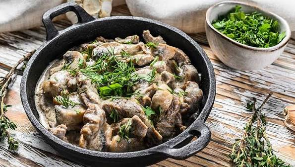

strogonoff historia origem
O strogonoff (ou estrogonofe) tem origem na Rússia do século XIX e foi batizado em homenagem à influente família aristocrática Stroganov.
O strogonoff (ou estrogonofe) tem origem na Rússia do século XIX e foi batizado em homenagem à influente família aristocrática Stroganov.

A criação: O prato nasceu da mistura da culinária russa tradicional com técnicas francesas, já que a aristocracia russa costumava contratar chefs franceses.
A receita original: Levava tiras de carne bovina bem macia (geralmente filé-mignon), salteadas com cogumelos, mostarda e envolvidas em creme de leite azedo (smetana). Não levava ketchup, molho de tomate, frango e nem era servido com arroz e batata palha.
Curiosidade: Uma lenda famosa diz que a carne foi cortada em pedaços bem pequenos e macios para que a esposa do conde Stroganov, que era banguela, pudesse mastigar sem dificuldade.